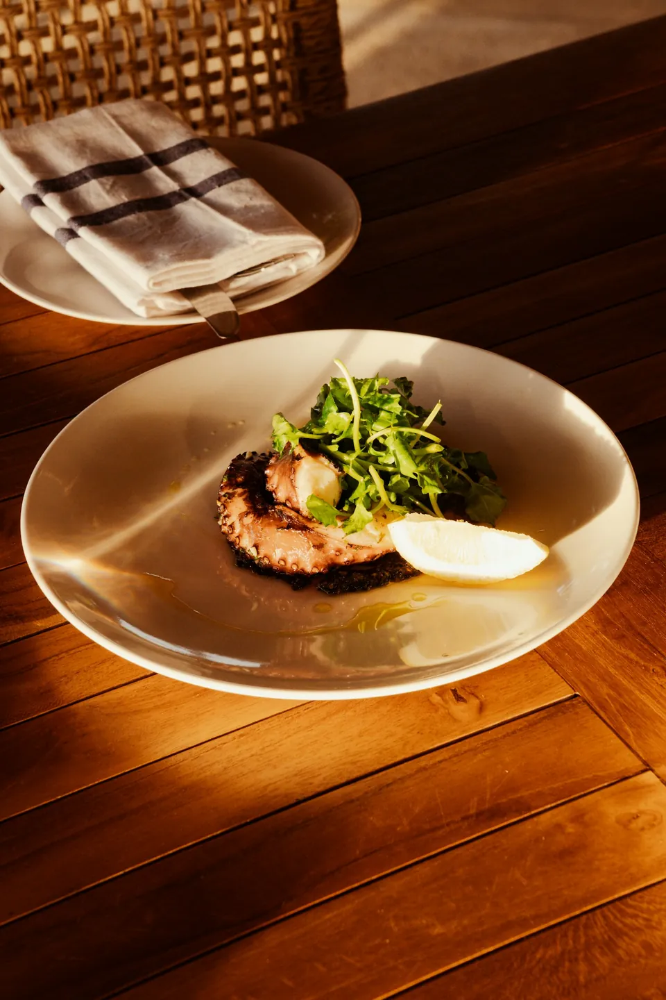
01
Izgara ahtapot, fava
Ahtapot kolu, sarı fava, kapari, kırmızı soğan turşusu. Kömürde, acele etmeden.
920 ₺Saatler
Masa ayırt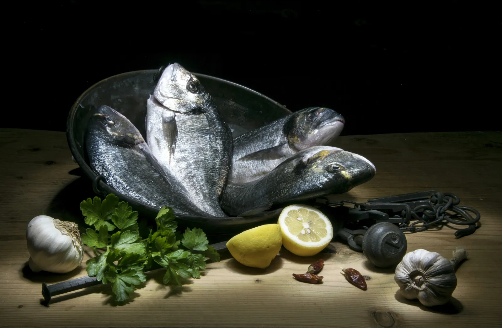
Moda — KadıköyMeze · deniz · ateş
Lodos çıkınca tekneler limanda kalır; biz de mutfağa çekiliriz. Kadıköy pazarından o sabah ne geldiyse, akşam ateşte ve masada.
Menü her sabah iskelede yeniden yazılır. Tezgâhta ne gördüysek, akşamın menüsü o.
Lodos, Moda'nın arka sokaklarında yirmi iki kişilik tek bir masa olarak başladı. Pek büyümedik: on dört masa, bir kömür ocağı, uzun bir mermer tezgâh.
Her sabah yedide Kadıköy balık pazarındayız. Bu yüzden menünün altında tarih yazar ve bazı akşamlar bazı tabaklar erkenden biter. Bitince biter; dondurucumuz yok.
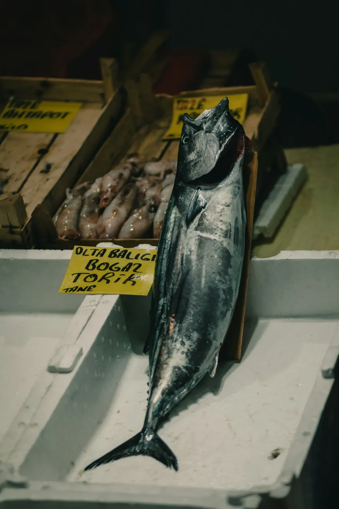
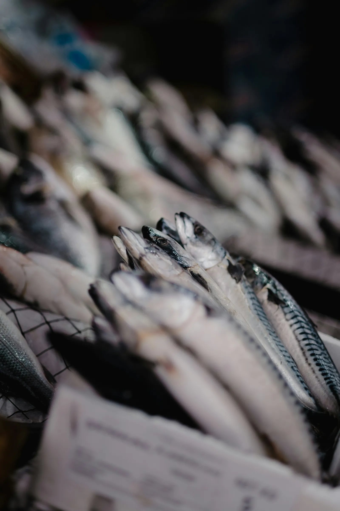

Ahtapot kolu, sarı fava, kapari, kırmızı soğan turşusu. Kömürde, acele etmeden.
920 ₺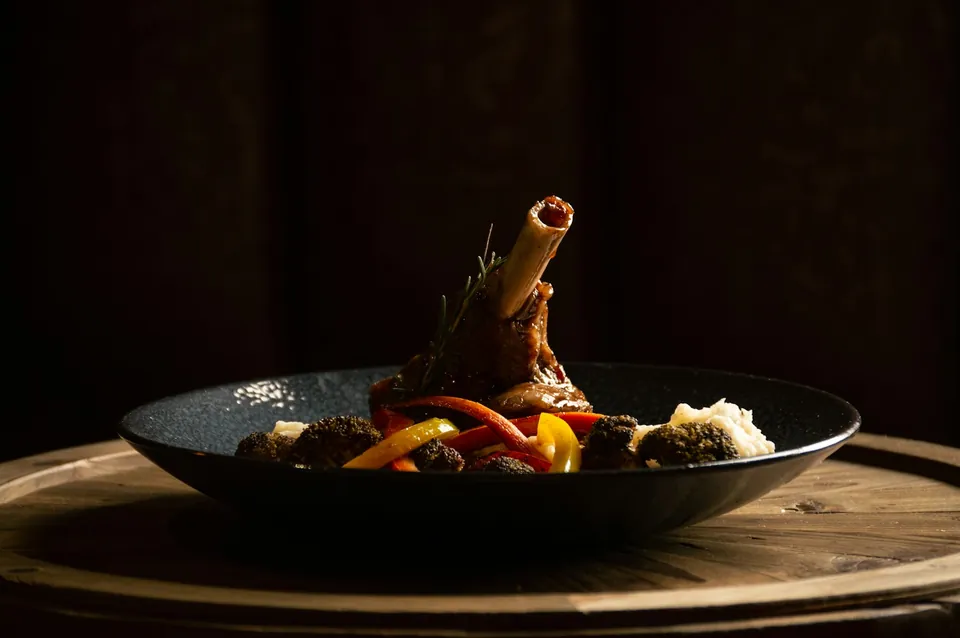
Altı saat kısık ateş, aşurelik buğday, kekikli et suyu. Kaşıkla ayrılır.
1.150 ₺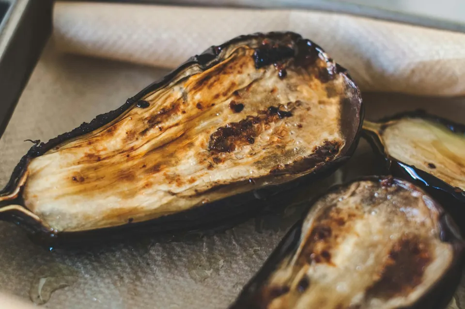
Kabuğu kömürde kararana kadar. Nar ekşisi, kavrulmuş susam, bolca maydanoz.
290 ₺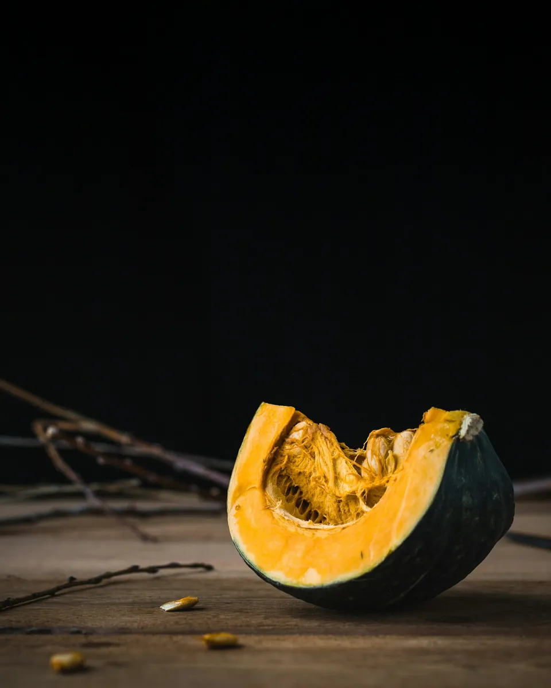
Közde bal kabağı, Erzincan tulumu, kavrulmuş fındık ve kızarmış adaçayı.
420 ₺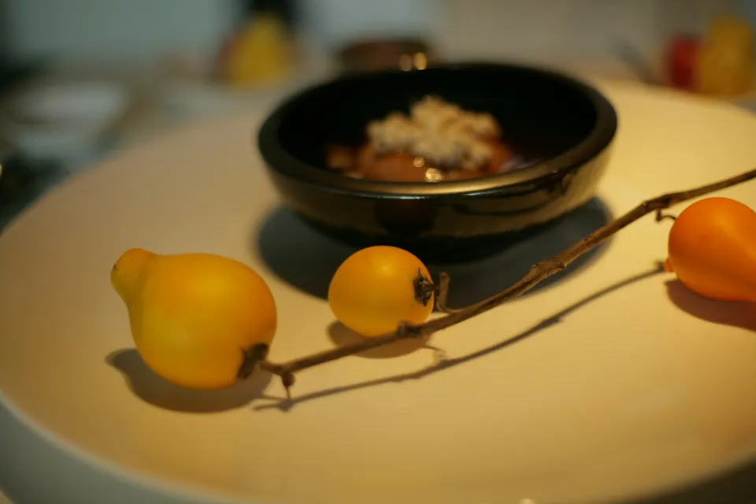
Karanfille fırınlanmış ayva, Afyon kaymağı, Antep fıstığı. Yalnızca sonbaharda.
420 ₺Kömürümüz meşe, ızgaramız dökme demir. Balık, ahtapot, kuzu; hepsi aynı ocağın başından geçer. Ateşi aceleye getirmeyiz, o yüzden bazı tabaklar biraz bekletir. Beklediğinize değsin diye.
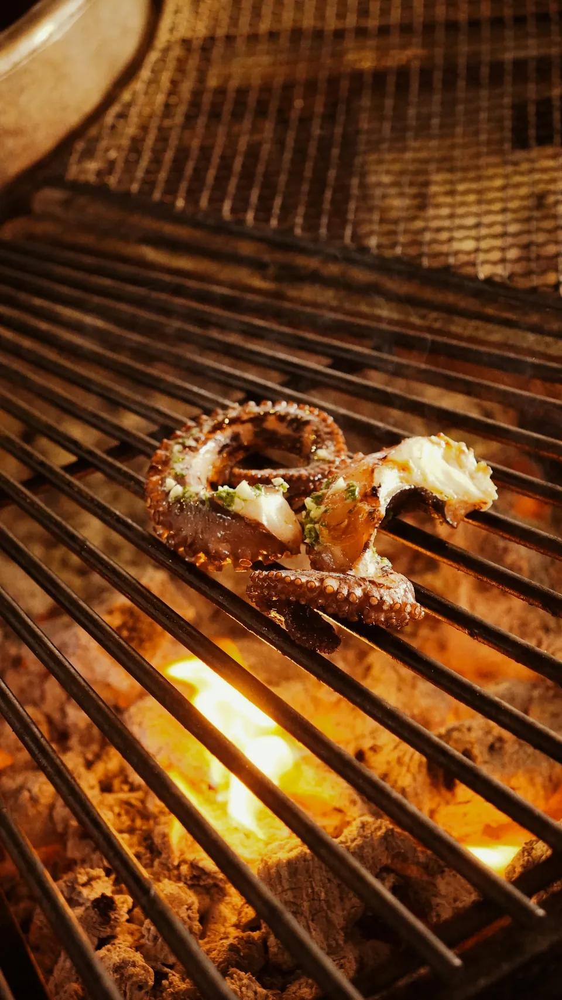
İlk mezeler tezgâha dizilir; erken gelen seçer.
Kömür beyaza dönünce ilk balık ızgaraya iner.
Bütün balık, masada, herkesin gözü önünde.
Mutfak kapanır; tatlıya ve kahveye hâlâ vakit var.
Cuma ve cumartesi bir saat daha geç.
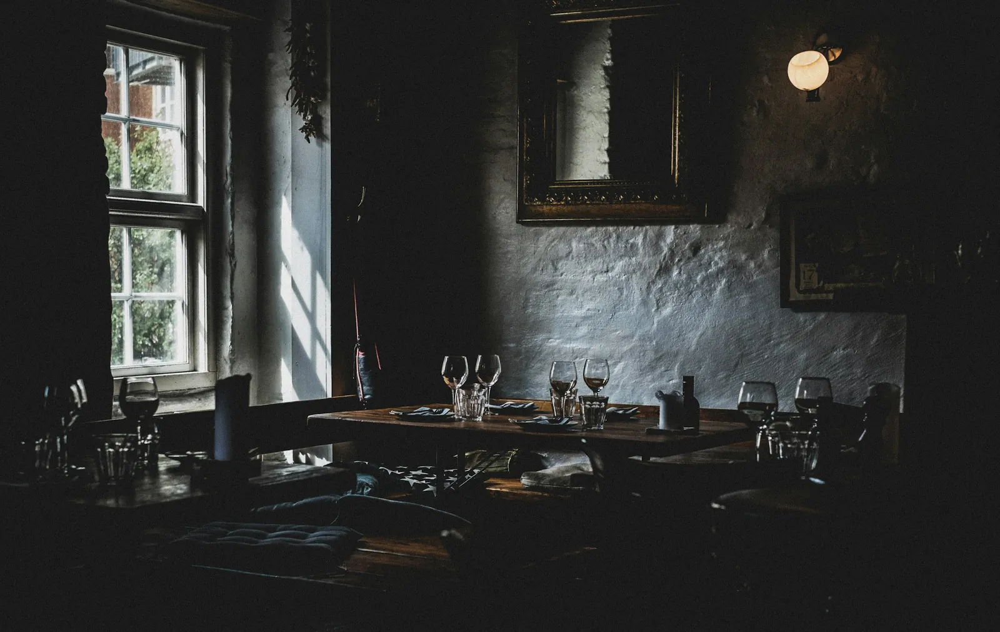
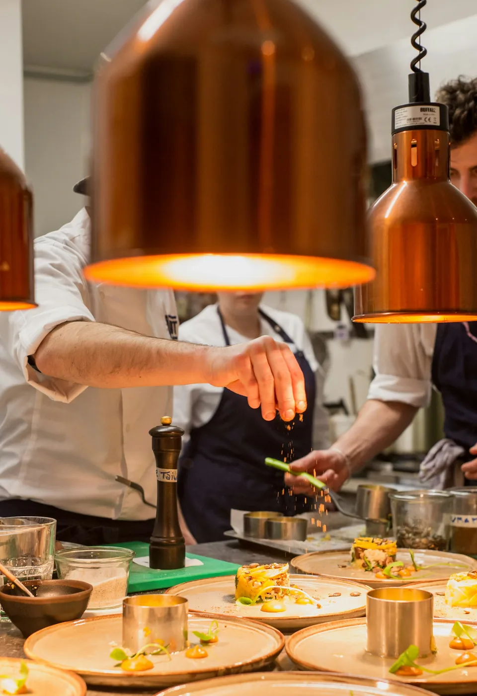
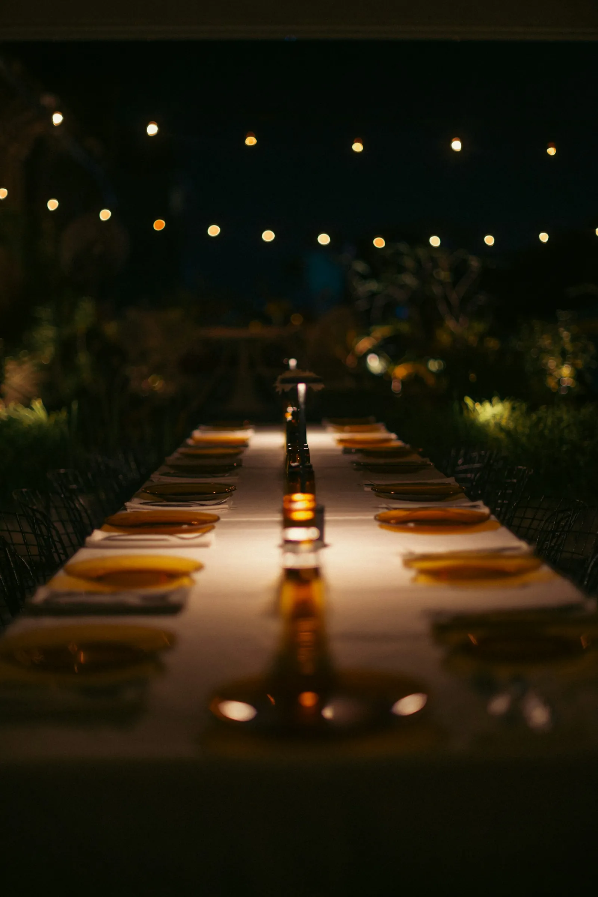
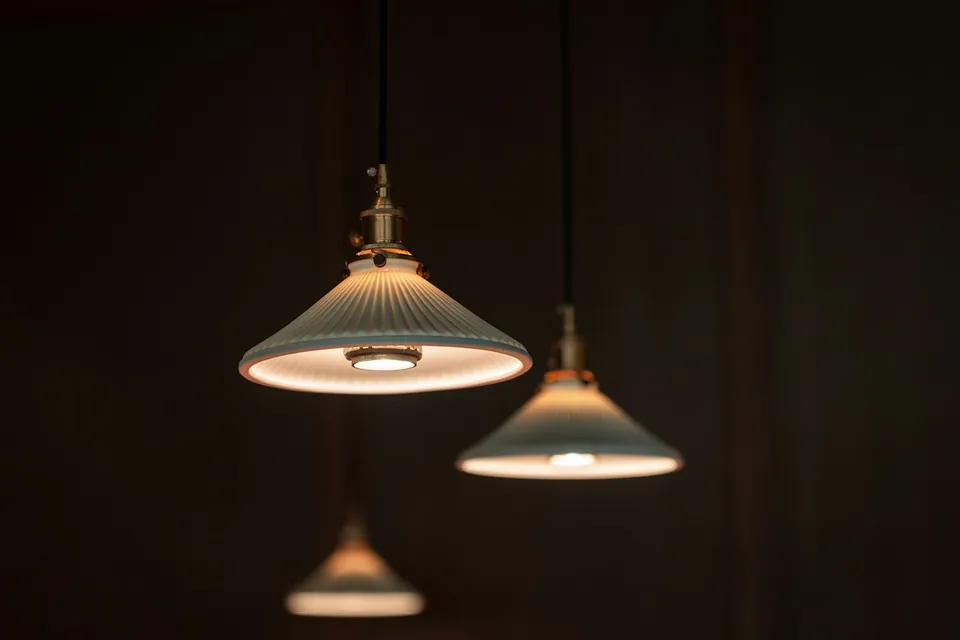
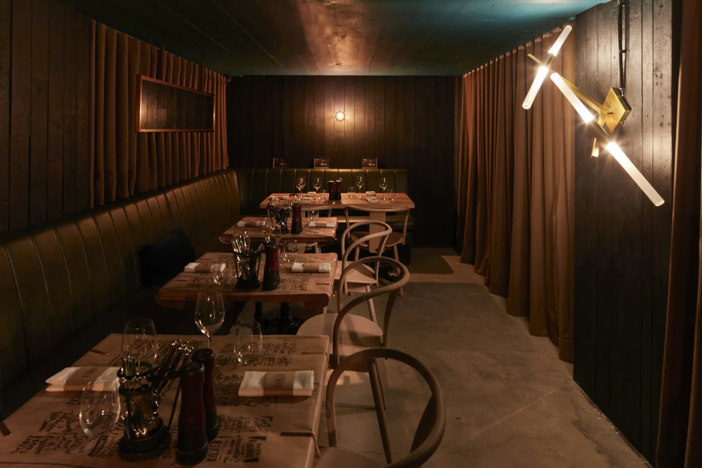
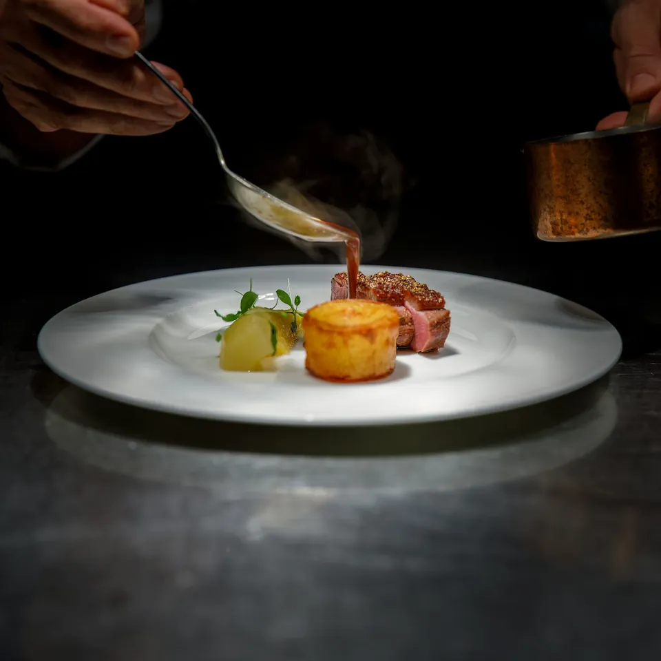
“Balığı ateşe sormadan tuzlamayız.”
Talebinizi bırakın; en geç bir saat içinde arayıp onaylayalım. Masalar 15 dakika tutulur.
Kadıköy iskelesinden 12 dakika yürüyüş · Moda tramvay durağına 3 dakika · Yakında otopark yok, vale de yok.
Haritada aç| Pazartesi | Kapalı |
|---|---|
| Salı | 18.00–00.30 |
| Çarşamba | 18.00–00.30 |
| Perşembe | 18.00–00.30 |
| Cuma | 18.00–01.30 |
| Cumartesi | 18.00–01.30 |
| Pazar | 13.00–23.00 |
Mutfak kapanıştan 30 dakika önce son siparişi alır. Resmî tatillerde saatler Instagram'da duyurulur.